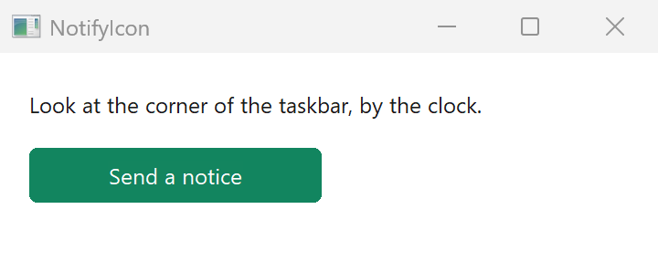

ไอคอนมุมจอ (NotifyIcon)
ในกล่องเครื่องมือ: ไอคอนมุมจอ · เทียบกับ WinForms: NotifyIcon
ไอคอนเล็ก ๆ ที่มุมขวาล่างของแถบงาน ข้างนาฬิกา ใช้บอกว่าโปรแกรมทำงานอยู่ แม้หน้าต่างจะปิดหรือซ่อนไว้ และส่งข้อความแจ้งเตือนแบบที่ Windows ใช้
- Text คือข้อความที่ขึ้นเมื่อชี้เมาส์ที่ไอคอน
show_balloon_tip(หัวข้อ, ข้อความ)ส่งข้อความแจ้งเตือน- ดับเบิลคลิกในตัวออกแบบ ได้ method ตอนคลิกไอคอน - มักใช้เรียกหน้าต่างกลับมา
- ไอคอนหายไปเองเมื่อหน้าต่างปิด (โค้ดที่ Phai Studio เขียนจัดการให้)

อยู่ในกล่องเครื่องมือกลุ่ม คอนโทรลทั่วไป (Common controls) - ลากมาวางแล้วมันจะไปอยู่ในแถบด้านล่างของตัวออกแบบ (ไม่ได้อยู่บนหน้าต่าง) · ในโค้ดเรียกมันว่า ui.ชื่อId ซึ่งเป็นชนิด phai_ui::ctl::NotifyIcon
ตัวอย่าง
1. ส่งข้อความแจ้งเตือน
fn tell_clicked(&mut self, ui: &NotifyiconDemoUi) {
ui.tray.show_balloon_tip("Phai demo", "Your work is saved.");
}2. คลิกไอคอนแล้วเรียกหน้าต่างกลับ
fn tray_clicked(&mut self, ui: &NotifyiconDemoUi) {
// A click on the icon: the window comes to the front again.
ui.show_window();
ui.activate();
}หน้าต่างตัวอย่างทั้งหมด: notifyicon_demo.phaiform กับ notifyicon_demo.rs ในโปรเจกต์ docs/help-src/examples/controls - รันด้วย cargo run -- notifyicon
Method ของ NotifyIcon
| Method | ทำอะไร |
|---|---|
set_text(&self, text: &str) | ข้อความที่ขึ้นเมื่อชี้เมาส์ที่ไอคอน |
set_visible(&self, on: bool) | แสดงหรือซ่อนไอคอน |
show_balloon_tip(&self, title: &str, text: &str) | ส่งข้อความแจ้งเตือนจากไอคอน: หัวข้อ, ข้อความ |
remove(&self) | เอาไอคอนออกถาวร (โค้ดที่ Phai Studio เขียนทำให้เองตอนปิดหน้าต่าง) |
Properties
ตั้งได้ในหน้าต่าง Properties เมื่อเลือกมันบนฟอร์ม - ตารางนี้สร้างจาก Phai Studio เอง จึงตรงกับที่เห็นในโปรแกรมเสมอ
| Property | ค่าเริ่มต้น | ทำอะไร |
|---|---|---|
| ออกแบบ | ||
| รหัส | notifyicon | ชื่อ control ในโค้ด และ #id ใน CSS |
| รูปลักษณ์ | ||
| ข้อความ | - | ข้อความที่แสดง - คีย์ภาษาอังกฤษ โปรแกรมแปลให้ |
| พฤติกรรม | ||
| มองเห็น | True | แสดงเมื่อเปิดหน้าต่างหรือไม่ |
Events
ดับเบิลคลิกชื่อ event ในแท็บ Events ของ Properties แล้ว Phai Studio จะเขียน method ให้ (ชื่อในตารางนี้สมมติว่า Id ของมันคือ notifyicon และอยู่บนฟอร์ม MainWindow) - ชี้เมาส์ที่ชนิดของ e เพื่อดูชื่อเต็ม
| Event | ทำอะไร | method ที่ Phai Studio เขียนให้ |
|---|---|---|
| คลิก | เมธอดที่ทำงานเมื่อเกิดเหตุการณ์นี้ ดับเบิลคลิก control เพื่อเขียน | fn notifyicon_clicked(&mut self, ui: &MainWindowUi) |
| MouseDoubleClick | ไอคอนมุมจอถูกดับเบิลคลิก - มักใช้เพื่อแสดงหน้าต่างอีกครั้ง | fn notifyicon_double_click(&mut self, ui: &MainWindowUi) |
ลองทำเอง
- ซ่อนหน้าต่าง (
ui.hide()) เมื่อย่อหน้าต่าง แล้วให้ไอคอนเรียกกลับมา - ใช้ ตัวจับเวลา แจ้งเตือน "ได้เวลาพัก" ทุก 30 นาที